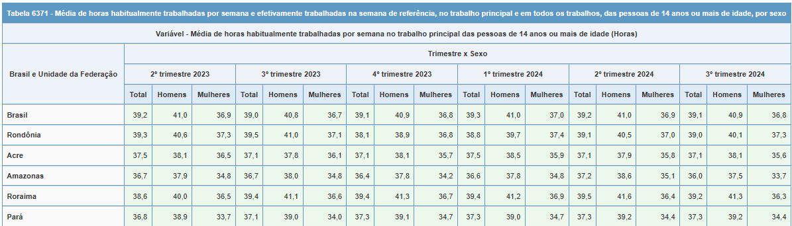

Reproduzindo a tabela
Objetivo
Reproduzir tabela 6371, que apresenta a Média de horas habitualmente trabalhadas por semana e efetivamente trabalhadas na semana de referência, no trabalho principal e em todos os trabalhos, das pessoas de 14 anos ou mais de idade, por sexo e por Unidade da Federação.
Variáveis utilizadas nas estimativas:
UF - Unidade da Federação;
V2007 - Sexo;
VD4031 - Horas habitualmente trabalhadas;
Estimando valores
Para estimar a média considerando a interação entre sexo e Unidade da Federação, usamos as funções svyby e interaction.
# Carregando pacotes----------------------------------------------------------------------------
library(PNADcIBGE)
library(survey)
# Definindo parâmetros------------------------------------------------------------------------
# Cria tabela com periodos de interesse (anos e trimestres)
periodos <- expand.grid(year = 2023:2024, quarter = 1:4)
periodos <- periodos[order(periodos$year, periodos$quarter), ]
periodos <- periodos[1:6,]
# Define variáveis de interesse da PNADc
variaveis_selecionadas <- c("UF","V2007","VD4031")
# Importando dados e estimando valores de interesse -----------------------------------------
# Cria data frame para armazenar resultados
df <- data.frame()
# Cria looping iterando sobre os trimestres selecionados
for(i in 1:nrow(periodos)){
# Importando dados
# dados = get_pnadc(year = periodos$year[i], quarter = periodos$quarter[i],
# vars = variaveis_selecionadas)
dados = readRDS(paste0("c://Users/03002433/Documents/pnadc",
periodos$year[i],periodos$quarter[i],".RDS"))
# Estimando valores
## Estimativas com interações de sexo e UF
resultado = svyby(formula=~VD4031,by =~interaction(V2007,UF),FUN=svymean,
design=dados, na.rm=TRUE)
## Estimativas a nível nacional por sexo
resultado_total = svyby(formula=~VD4031,by =~V2007,FUN=svymean,
design=dados, na.rm=TRUE)
# Estimando CV
cv = as.data.frame(cv(resultado))
cv_total = as.data.frame(cv(resultado_total))
# Criando data fame temporário
df_temp <- data.frame(
year = periodos$year[i],
quarter = periodos$quarter[i],
interacao = resultado[[1]],
media = resultado[[2]],
cv = cv[[1]]
) |>
add_row(
year = periodos$year[i],
quarter = periodos$quarter[i],
interacao = c("Homem.Brasil","Mulher.Brasil"),
media = resultado_total[[2]],
cv = cv_total[[1]]
)
# Gravando resultados no data frame
df <- rbind(df, df_temp)
# Remove dados da do trimestre da memória
remove(dados)
}Formatando os dados
O data frame obtido com o código a cima apresenta a coluna interação que está no formato “sexo.UF”. Assim, usaremos a função separate do pacote tidyr para criar duas novas colunas.
# Carrega pacote
library(tidyr)
# Altera data frame
df <- df |>
separate(interacao,c("sexo","UF"), sep = "\\.")Tabela
Usando o pacote gt é possível formatar uma tabela para exibir os valores calculados.
# Carregando pacote
library(gt)
# Criando tabela
gt(df) |>
tab_header(
title = "Tabela 6371 - Média de horas habitualmente trabalhadas por semana e efetivamente trabalhadas na semana de referência, no trabalho principal e em todos os trabalhos, das pessoas de 14 anos ou mais de idade, por sexo e por Unidade da Federação",
subtitle = "Variável - Média de horas habitualmente trabalhadas por semana no trabalho principal das pessoas de 14 anos ou mais de idade (Horas)"
) |>
cols_label(
year = "Ano",
quarter = "Trimestre",
sexo = "Sexo",
UF = "Brasil e Unidades da Federação",
media = "Média",
cv = "Coeficiente de Variação"
) |>
fmt_number(
columns = media,
decimals = 1
) |>
fmt_percent(
columns = c(cv),
decimals = 1) |>
opt_interactive()Tabela 6371 - Média de horas habitualmente trabalhadas por semana e efetivamente trabalhadas na semana de referência, no trabalho principal e em todos os trabalhos, das pessoas de 14 anos ou mais de idade, por sexo e por Unidade da Federação
Variável - Média de horas habitualmente trabalhadas por semana no trabalho principal das pessoas de 14 anos ou mais de idade (Horas)